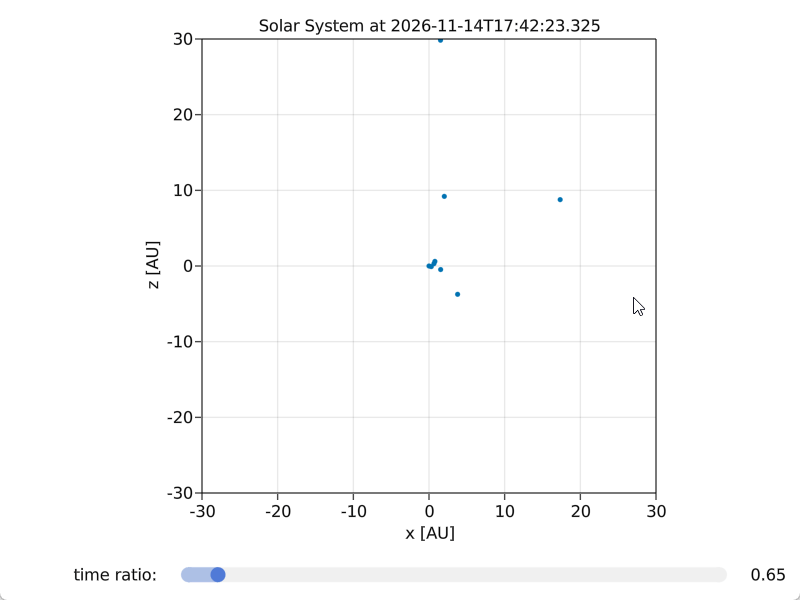

08 Solar System
using GLMakie
using AstroPlot
using PhysicalParticles, Unitful, UnitfulAstro
using AstroLib
using Dates
using ProgressMeter
using AstroIC
function display_solarsystem(startdate = now(); fps = 60.0, N = 10000, ratio = 1.0, adapt = true)
last_plot_time = time()
time_between_plot = 1.0 / fps # ms
T = jdcnv(startdate)
fig = GLMakie.Figure()
title = Observable("Solar System at " * string(startdate))
ax = GLMakie.Axis(
f[1,1],
title = title,
xlabel = "x [AU]",
ylabel = "z [AU]",
aspect = AxisAspect(1.0),
)
ls = labelslider!(f, "time ratio: ", 0.1:0.01:10.0)
ls.slider.value = ratio
f[2,1] = ls.layout
xu, yu = pack_xy(solarsystem(T), yaxis = :z)
x = ustrip.(u"AU", xu)
y = ustrip.(u"AU", yu)
if adapt
GLMakie.xlims!(ax, (middle(x) - 22, middle(x) + 22))
GLMakie.ylims!(ax, (middle(y) - 22, middle(y) + 22))
else
GLMakie.xlims!(ax, (-30, +30))
GLMakie.ylims!(ax, (-30, +30))
end
pos = Observable([x y])
GLMakie.scatter!(ax, pos, markersize = 5.0)
display(f)
@showprogress for i in 1:N
if time() - last_plot_time > time_between_plot
#T += to_value(sl1.value)
T += to_value(ls.slider.value)
xu, yu = pack_xy(solarsystem(T), yaxis = :z)
x = ustrip.(u"AU", xu)
y = ustrip.(u"AU", yu)
if adapt
GLMakie.xlims!(ax, (middle(x) - 22, middle(x) + 22))
GLMakie.ylims!(ax, (middle(y) - 22, middle(y) + 22))
end
@async title[] = "Solar System at " * string(daycnv(T))
@async pos[] = [x y]
last_plot_time = time()
end
sleep(0.1 / fps)
end
return fig
end
display_solarsystem(adapt = false)